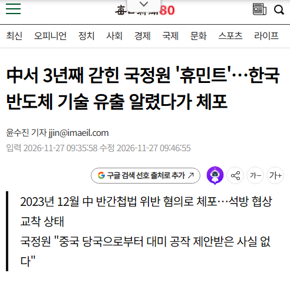
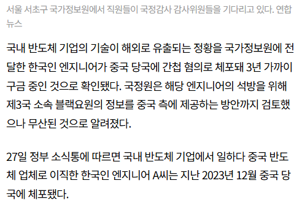

요약있음.


요약
중국 반도체 회사에서 일하던 한국 엔지니어가 중국이 여러 경로로 한국기술을 빼돌리는걸 포착함
한국 엔지니어는 한국에 이를 신고함
도둑질 하던 중국은 적반하장으로 한국인 엔지니어를 멋대로 체포 및 구금함.
요약있음.


요약
중국 반도체 회사에서 일하던 한국 엔지니어가 중국이 여러 경로로 한국기술을 빼돌리는걸 포착함
한국 엔지니어는 한국에 이를 신고함
도둑질 하던 중국은 적반하장으로 한국인 엔지니어를 멋대로 체포 및 구금함.
중국은 홍위병 날뛸때 엄마를 공산당에 팔아서 그런지 엄마 없는 짓만 골라서 한다.
실망 시키지 않는구만 한결같긴해 하는짓이
참깨 두마리 아무이유나 갖다붙이고 붙잡아놓은다음 두 마리랑 한국인 한명 교환하자 해야지 ㅋㅋ
어유 한국에서 도촬한 중국놈도 풀어주는 마당에 ㅋㅋ
선족이들 그렇게 물고 빠는 중국 발전의 실체 = 긴빠이
반도체 전기차 배터리 등등 전부 마찬가지
애초에 지들이 자랑하는게 얼마나 좋은회사꺼 훔쳤나인데 ㅋ
짱.깨 = 애미 출타한 ㅆ새끼들...
린도인들아 더 호되게 하란말이다!
일단 국정원이 최선을 다한건 알겠음. 그래도 나중에 귀국하시면 영웅으로 대접해드려라....
오늘도 1초를 소중히 쓰겠습니다
세상애서 가장 효율적인 1초.
빨갱이 나라들은 상식적으로 이해하려고 하면 안됨 그냥 상종 안 하는 게 답이다
가족이라도 챙겨드리자
쎼쎼
나는 돈에 관심이없습니다=돈미새
저를 믿으세요 제가 도와드리겠습니다=사기꾼
한국은 중국껄 도둑질해간다=도둑놈새끼들